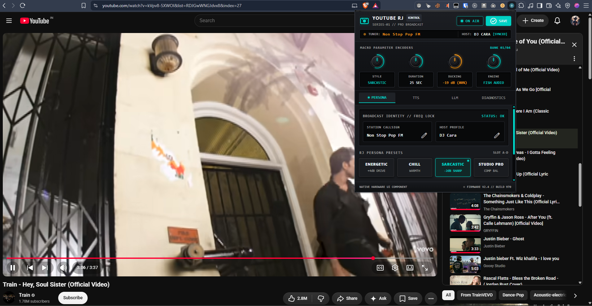

Turn your YouTube playlist into a live radio station.
YouTube Radio Jockey listens along to your playlists and acts as your live radio host — introducing upcoming songs, commenting on lyrics and artist trivia, reading top YouTube comments, and smoothly ducking music volume like real broadcast hardware.

Built like a broadcast desk.
A hardware-inspired control surface with rotary encoders, Maschine-style switches, and real-time telemetry — powering an AI host that never runs out of things to say.
Intelligent AI Radio Host (RJ)
- Seamless playlist flow — bridges songs by analyzing the current track and teasing the upcoming one.
- Smart pre-buffering — synthesizes commentary ~10s in, cached and ready to fire ~30s before track end.
- Synced lyrics via LRCLIB to reference specific lines, themes, and tone.
- Live YouTube comments scraped and mentioned for authentic banter.
- Broadcast history memory avoids repetitive quips.
Native Instruments Komplete Deck
- Anodized audio-rack aesthetic: rotary knobs with SVG LED gauges, tactile backlit switches, neon cyan telemetry.
- Macro encoders for Style, Duration (25/35/50s), Audio Ducking (-6 to -24dB), TTS Engine.
- Module selector bank: PERSONA, TTS, LLM, DIAGNOSTICS.
- Floating YouTube in-page HUD with pulsing cyan LED ring and 3-bar equalizer.
Studio-Grade Audio Ducking
- Web Audio API gain control fades YouTube playback down while the RJ speaks.
- Gentle crossfade back to full volume when the host finishes.
- User-defined ducking depth from -6dB to -24dB.
Multi-Engine LLM Architecture
- OpenRouter — custom models (flint, Llama 3.3, Claude, GPT-4o) with your own key.
- Google Gemini — ultra-fast Gemini 2.0 Flash.
- ChatJimmy — free, zero-setup Llama 3.1, no API key.
Multi-Provider Speech (TTS)
- Fish Audio — high-fidelity emotional zero-shot voice cloning.
- Murf.ai — studio voices with 7+ emotional presets.
- Google TTS — zero-config free fallback.
RJ Persona Styles & Identity
- Station callsign (e.g. Non Stop Pop FM, Nightwave Plaza).
- Host profile name (e.g. DJ Cara, Alexis).
- 4 presets: ENERGETIC, CHILL, SARCASTIC, STUDIO PRO.
Live Diagnostics & Telemetry
- API handshake verification — test buttons for LRCLIB, TTS, and LLM.
- Real-time system bus logs in the extension popup.
- One-click export of all generated session scripts as structured JSON with timestamps and song metadata.
Four voices, one desk.
Up and on-air in minutes.
No build required for end users — just load the prebuilt dist folder. Developers can build from source with Bun.
Quick Install (No Coding)
Download the latest ZIP
Grab the source archive and extract it to a folder.
https://github.com/rayanfer32/youtube-radio-jockey/archive/refs/heads/main.zipOpen extensions page
Go to chrome://extensions/ in Chrome, Brave, Edge, or Opera.
Enable Developer mode
Toggle in the top-right corner.
Load unpacked
Click Load unpacked and select the dist folder inside the extracted folder.
You're live
The YouTube Radio Jockey icon appears in your toolbar.
Build From Source (Developers)
Clone the repository
git clone https://github.com/rayanfer32/youtube-radio-jockey.git\ncd youtube-radio-jockeyInstall dependencies (Bun)
bun installBuild the extension
bun run buildLoad into browser
Navigate to chrome://extensions/, enable Developer mode, click Load unpacked, select dist/.
Watch mode
bun devProduction build
bun run buildZero keys to start. Add more as you go.
ChatJimmy and Google TTS work out of the box with no API keys for quick testing.
| Service | Purpose | Requirement | Link |
|---|---|---|---|
| OpenRouter | Commentary Generation (Custom Models) | Optional (Recommended) | openrouter.ai/keys |
| Google AI Studio | Gemini 2.0 Flash Commentary | Optional | aistudio.google.com |
| Fish Audio | Natural Emotional TTS | Optional (Recommended) | fish.audio |
| Murf.ai | Professional Studio Voices | Optional | murf.ai/api |
Test the full radio experience.
Try a continuous music playlist to hear automatic transitions and track-to-track commentary.